La cámara cruza un hayedo vasco, entra por un hueco escondido en un trasmocho y descubre una ciudad de duendes entera dentro del árbol. Una pieza corta, sin diálogos, donde lo importante es el cambio de escala.The camera crosses a Basque beech forest, slips through a hidden hollow in a pollarded tree and finds a whole goblin city inside. A short, wordless piece where the key is the change of scale.
Cómo lo hago: trabajo como director creativo. Cada edificio empieza en un concept que genero con IA y corrijo pintando encima hasta que tiene la intención que busco; después se modela en Blender con estilo de siluetas exageradas, nada recto ni perfecto. Las tareas técnicas y repetitivas las resuelvo con herramientas propias que desarrollo con IA (Claude): así el tiempo va a las decisiones, no a la mecánica.How I make it: I work as creative director. Every building starts as an AI-generated concept that I correct by painting over it until it carries the intent I want; then it is modelled in Blender with exaggerated silhouettes, nothing straight or perfect. Technical, repetitive tasks are handled by my own tools, developed with AI (Claude), so the time goes into decisions, not mechanics.
Ahora mismo: las piezas principales están modeladas y en fase de esculpido. Después vienen el blocking de los planos, la luz pintada y la cámara.Right now: the main pieces are modelled and being sculpted. Next come shot blocking, painted lighting and camera.
- TipoType
- Proyecto personalPersonal project
- EstadoStatus
- EsculpidoSculpting
- Mi papelMy role
- Dirección creativa, concept, modelado y esculpidoCreative direction, concept, modelling and sculpting
- Software
- Blender · addons propioscustom add-ons · Claude Code · Procreate
Del concept al 3DFrom concept to 3D
La Torre del ConsejoThe Council Tower
Donde se reúnen los duendes: un caserío que se retuerce alrededor de una torre con reloj, apoyado sobre raíces.Where the goblins meet: a farmhouse twisting around a clock tower, standing on roots.
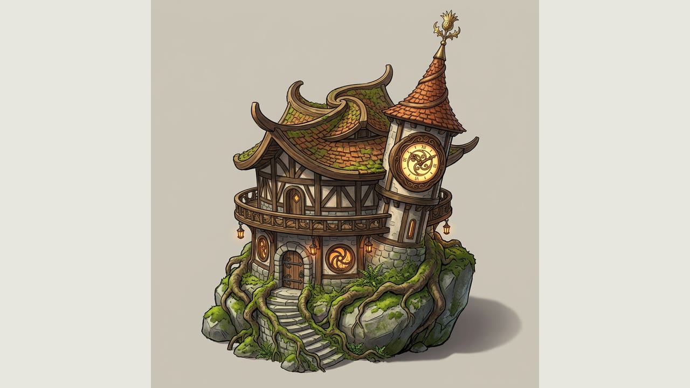
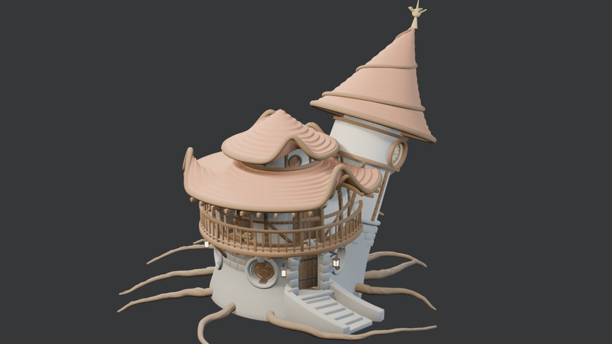
La IglesiaThe Church
Tejados en espiral que giran como una seta abierta, con piedras clavadas alrededor como un crómlech.Spiral roofs that turn like an opening mushroom, ringed by standing stones like a cromlech.
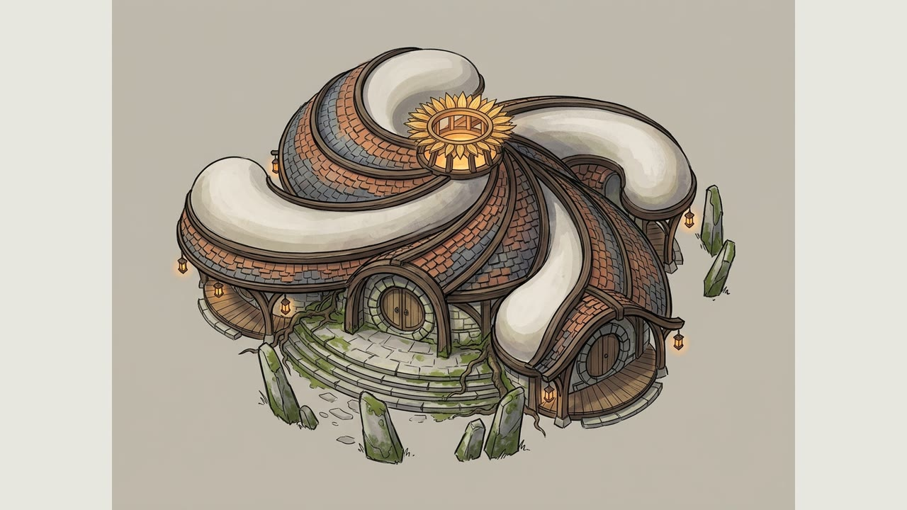
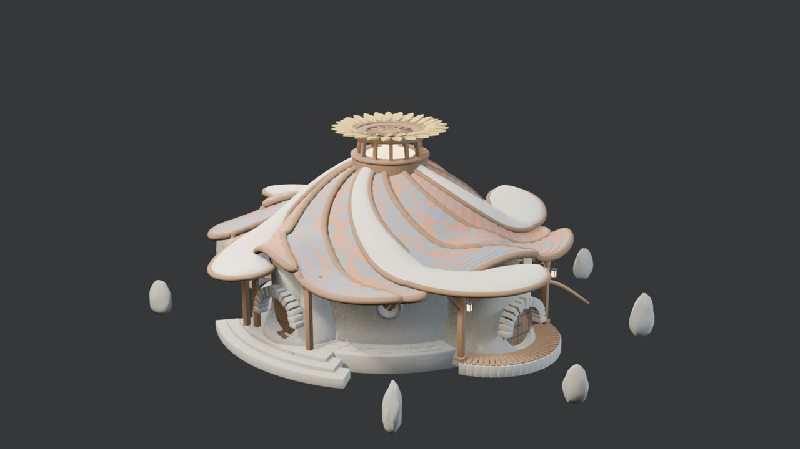
El Embudo mágicoThe Magic Funnel
El vertedero de la ciudad: una tina de madera alimentada por un tronco hueco, con escalera y caño de salida.The city's spillway: a wooden vat fed by a hollow log, with a ladder and an outlet spout.
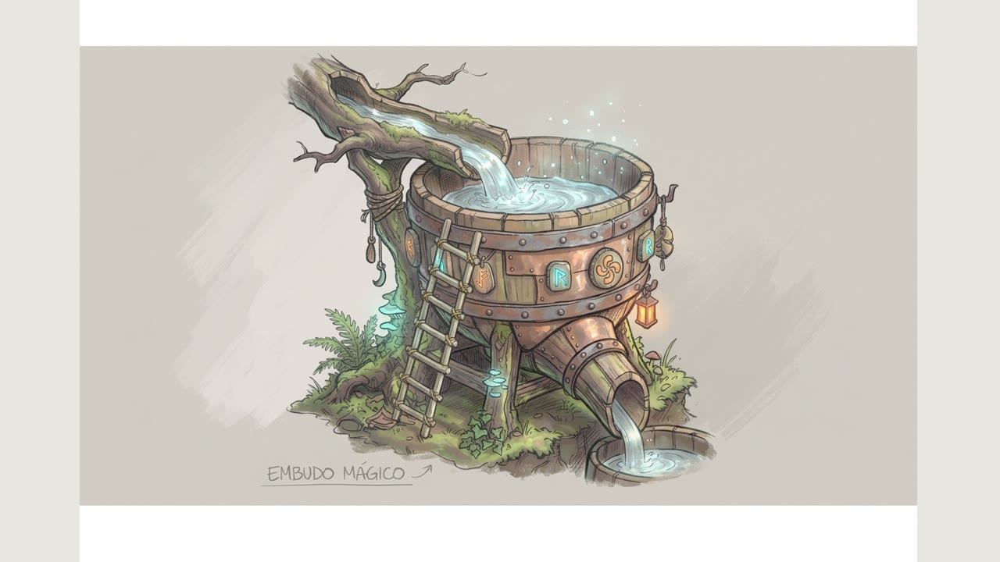
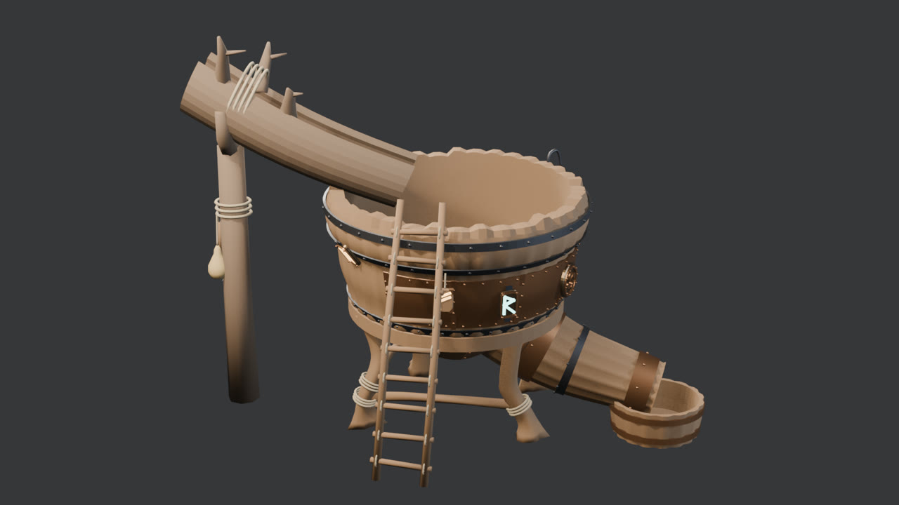
El Puesto del mercadoThe Market Stall
Aquí se ve el proceso completo: el concept, mis correcciones pintadas encima y el modelo resultante.The full process is visible here: the concept, my painted corrections on top, and the resulting model.
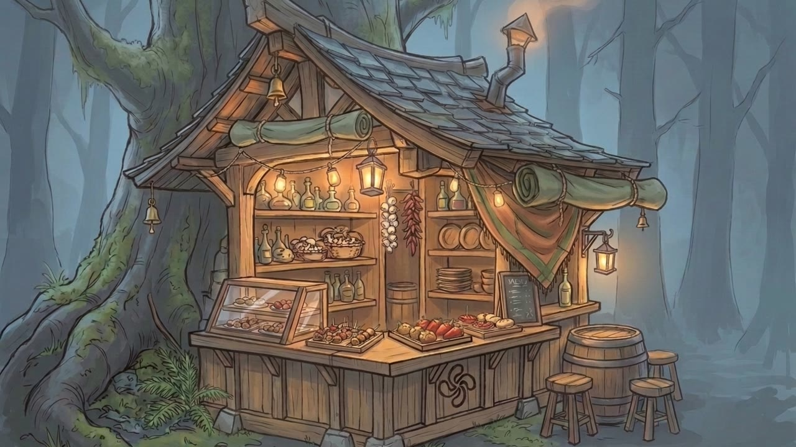
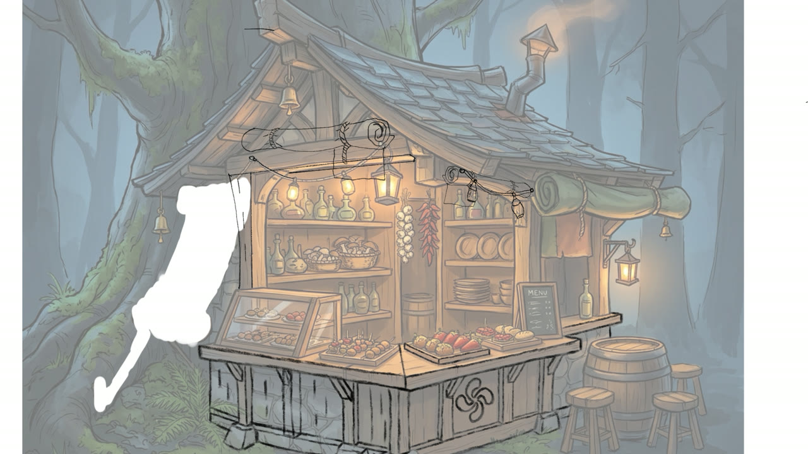
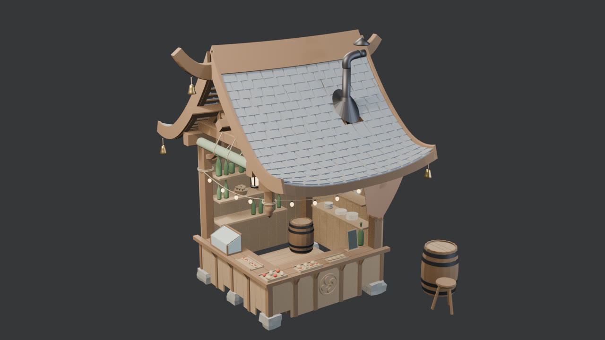
Herramientas propiasCustom tools
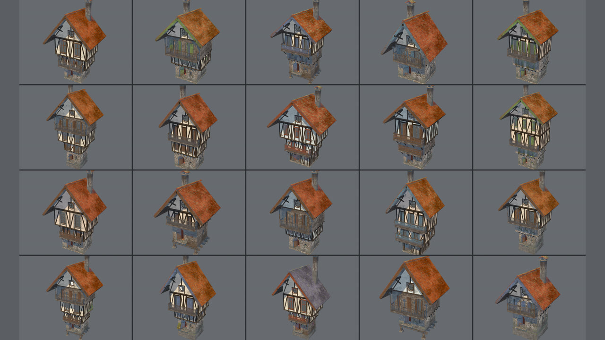
Addon · Blender
GA Casas
Generador de casas con biblioteca de diseños y controles de forma (inclinar, curvar, estrechar, hundir cumbrera) para conseguir siluetas con carácter sin modelar cada casa desde cero.House generator with a design library and shape controls (lean, bend, taper, sag the ridge) to get characterful silhouettes without modelling every house from scratch.
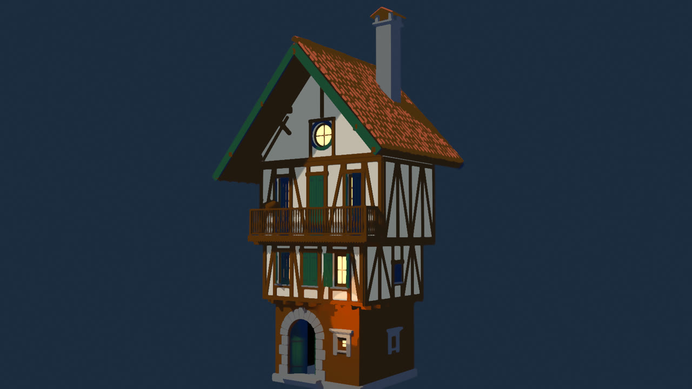
Addon · Blender
GA Materiales
Biblioteca de materiales de la ciudad con paletas de color, para que madera, piedra, cal y tejas compartan el mismo lenguaje visual.The city's material library with colour palettes, so wood, stone, lime and tiles share one visual language.
Addon · Blender
Iratxo Trasmocho
Generador procedural de hayas trasmochas: fuste, cabeza, ramas en candelabro y raíces que se pegan al terreno.Procedural pollarded-beech generator: trunk, head, candelabra branches and roots that hug the terrain.
Primera pruebaFirst test
Mi primer montaje (noviembre), con la ciudad generada por script. Funcionaba, pero parecía un videojuego: le faltaba intención. Por eso ahora rehago la ciudad pieza a pieza y plano a plano, empezando por el dibujo.My first edit (November), with a script-generated city. It worked, but it looked like a video game: it lacked intent. That's why I'm now rebuilding the city piece by piece and shot by shot, starting from the drawing.
Cómo trabajo con IA →